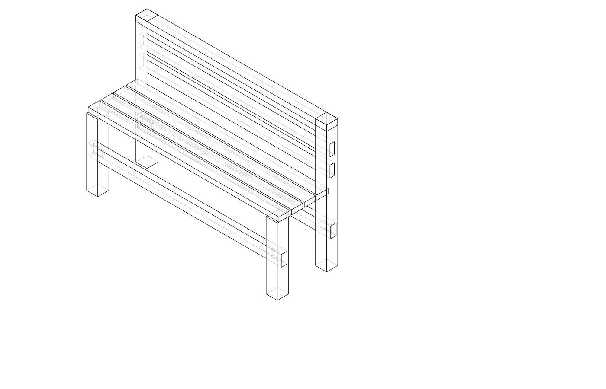
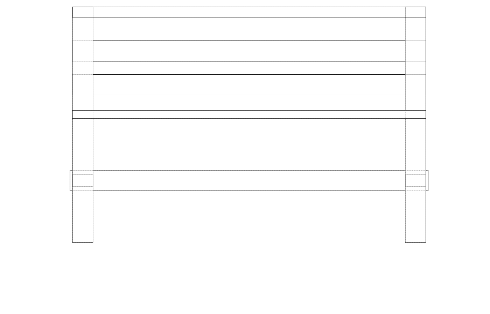
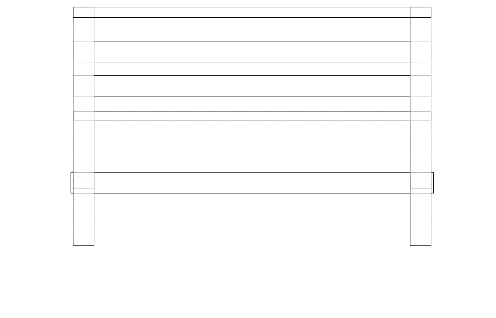
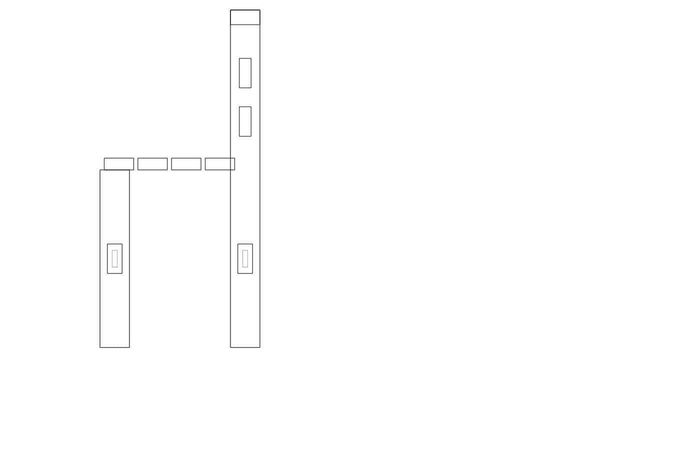
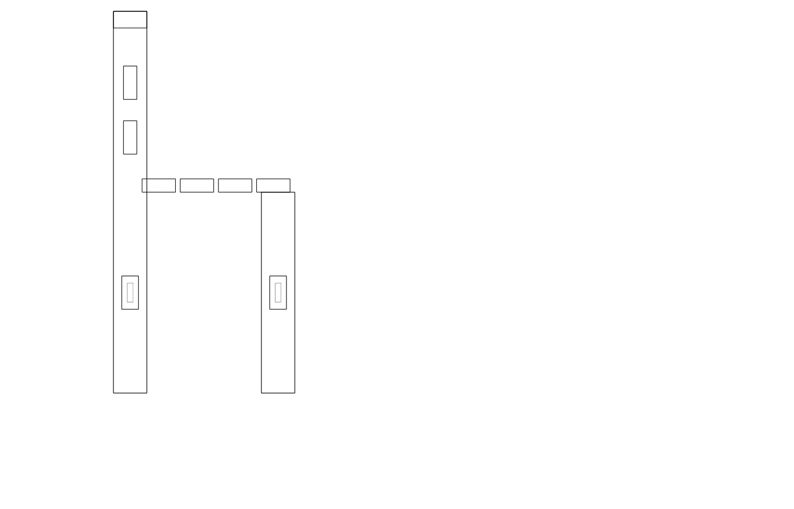
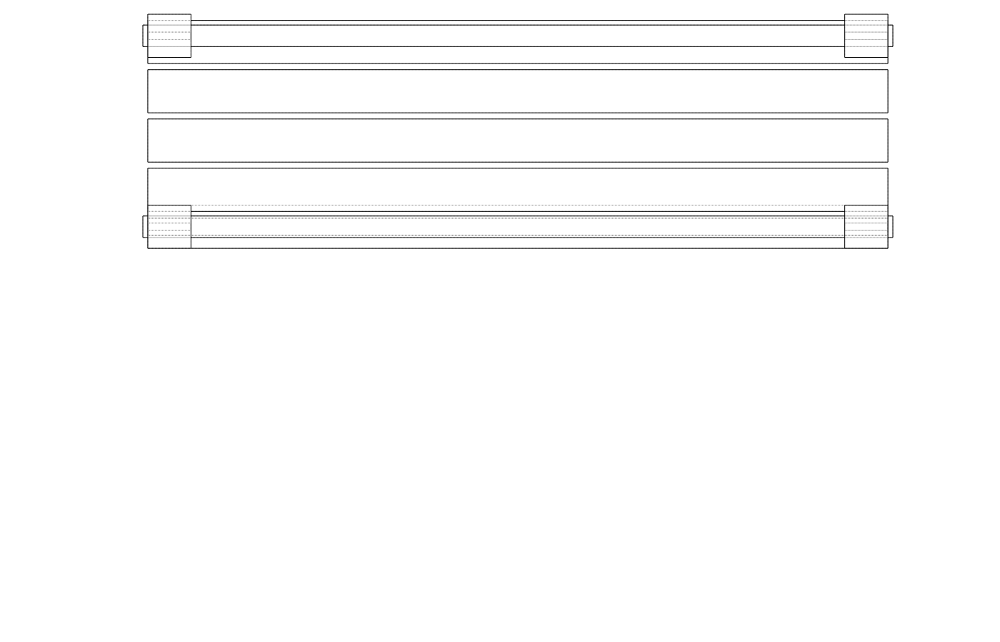

| Item | Qty | Unit | Unit price | Subtotal |
|---|---|---|---|---|
| Cedar 70x70mm × 2400mm (legs/posts) | 4 | length | $28.00 | $112.00 |
| Cedar DAR 70x35mm × 1200mm (seat rails) | 2 | length | $14.00 | $28.00 |
| Cedar DAR 70x35mm × 1200mm (back top rail) | 1 | length | $14.00 | $14.00 |
| Cedar DAR 70x28mm × 1200mm (seat slats) | 4 | length | $10.00 | $40.00 |
| Cedar DAR 70x28mm × 1200mm (back slats) | 2 | length | $10.00 | $20.00 |
| Hardwood wedges (pack) | 1 | pack | $6.00 | $6.00 |
| Exterior PVA glue | 1 | bottle | $7.00 | $7.00 |
| Stainless screws 50mm (box) | 1 | box | $9.50 | $9.50 |
| Outdoor timber oil 500mL | 1 | tin | $28.00 | $28.00 |
| Total | $264.50 | |||
| Part | Qty | L (mm) | W (mm) | T (mm) | Notes |
|---|---|---|---|---|---|
| Leg / back post | 4 | 830 | 70 | 70 | Front pair: 830 mm total (450+380) |
| Rear leg | 0 | — | — | — | Front legs serve as back posts |
| Seat rail | 2 | 1200 | 70 | 35 | Full bench width; tenons on ends |
| Back top rail | 1 | 1200 | 70 | 35 | Across back post tops |
| Seat slat | 4 | 1200 | 70 | 28 | |
| Back slat | 2 | 1200 | 70 | 28 | |
| Hardwood wedge | 8 | 50 | 14 | 4→0 | Tapered, cut from offcut |
Mill and cut all parts to length. Front legs are 830 mm (seat height 450 mm + back post height 380 mm). Rear legs are 450 mm. Keep leg pairs together so mortise positions match.
Mark mortises on legs. On each front-rear leg pair (at the same height), mark a 12 mm wide × 40 mm tall mortise centred on the leg face, positioned 50 mm from each leg end (top and bottom). Use a marking gauge from the reference face. Mark all four legs before cutting any.
Chop mortises. Clamp each leg in the vice. Score across the grain with a chisel at each shoulder, then chop out the waste in 5 mm stages from both ends toward the middle. Keep walls vertical. Test a scrap of 12 mm stock to check fit — snug with light mallet pressure is correct.
Cut tenons on seat rails. Mark tenon shoulders 70 mm in from each end (= leg width). Mark tenon thickness 12 mm and height 40 mm, centred on rail. Saw the two cheeks with a tenon saw along the grain, then saw the two shoulders. Remove waste. The tenon should protrude ~8 mm past the far leg face.
Saw kerf in tenon ends. With the tenon dry-fitted in its mortise, mark the centre of the tenon end. Remove and saw a 25 mm deep kerf along the tenon length at this mark — this is the wedge slot.
Dry fit. Assemble both end frames (front leg + rear leg + seat rail) without glue. All shoulders should pull up tight; tenons should protrude evenly. Clamp and check for square diagonals.
Back top rail mortises. In the top of each front leg (back post), chop a 12 mm × 40 mm blind mortise 30 mm deep. Cut matching tenons on the back top rail ends.
Glue up end frames. Apply exterior PVA to mortise walls and tenon faces. Drive tenons home with a mallet. Drive hardwood wedges into tenon kerfs — the wedges spread the tenon, locking it in the mortise. Let cure 4 hours minimum.
Connect end frames. Glue and fit the back top rail between the two back posts. Clamp across the bench width. Check for square in both planes.
Attach seat slats. Space the 4 seat slats evenly across the seat rails (approx 10 mm gaps). Fasten with 2 × 50 mm stainless screws per slat end. Countersink and plug with cedar plugs, or leave countersinks exposed.
Attach back slats. Space back slats between seat level and back top rail. Screw through into seat rail and back top rail.
Sand and finish. Sand all faces to 120 grit. Ease all edges with a block plane or sandpaper. Apply two coats of exterior timber oil, allowing full absorption between coats. Pay special attention to end grain.